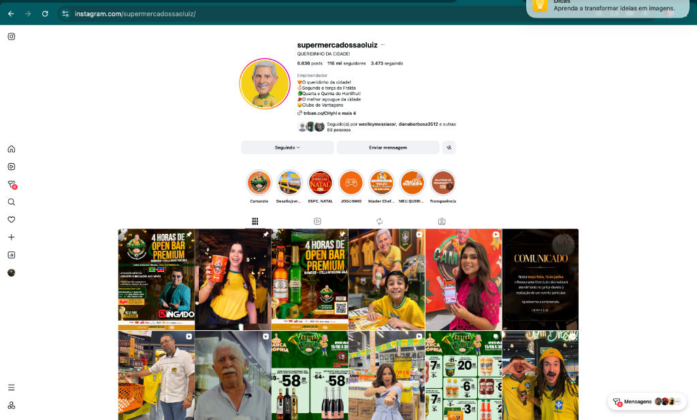
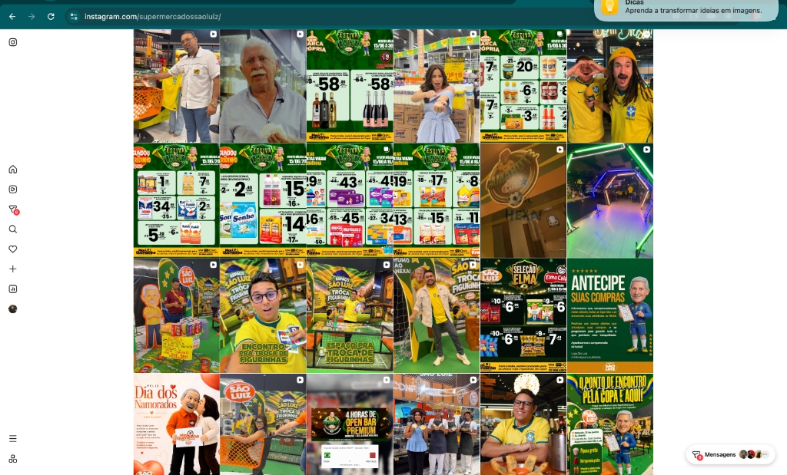
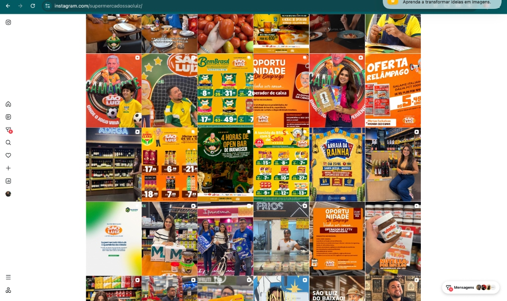

Aplicabilidade Tecnológica e Operacional para o
Supermercado São Luiz



Usando nossa forte presença promocional como base para as novas inovações.
O varejo pós-2026 foca na tecnologia não apenas para cortar custos, mas para suprir a grave escassez de mão de obra operacional.
A Missão do São Luiz: Investir em automação de preparo e inteligência de caixa para manter a excelência.
Fornos e seladoras com menor necessidade de operadores.
Checkouts autônomos e assistidos por câmeras (IA).
Sistemas de pagers/pulseiras substituindo gritos e sirenes.
IA monitorando processos críticos (Validade e Docas).
Lojas sem gritos no caixa, sem demora na pesagem. Ambiente agradável visualmente.
A força das promoções locais amplificada por Painéis LED modernos e dinâmicos.
Vender mídia interna para grandes indústrias, barateando os custos das ações.
Proteínas pré-prontas + Embalagem MAP (Vácuo). Aumenta shelf-life e margem.
Sistemas AX Tecnologia (Pagers e Pulseiras) para otimizar fiscais e zerar filas.
Dashboards de Validades automatizados com IA Gemini para a Brigada de Loja.
Payback: < 4 meses
Ganhos: Aumento de produtividade e redução de abandono de compras.
Payback: Imediato
Ganhos: Redução drástica de perdas no FLV/Frios e menos tempo gerencial gasto em planilhas.
Payback: 8 a 12 meses
Ganhos: Validade aumenta de dias para meses. Produto percebido como Premium aceita maior margem.
A tecnologia está disponível. O sucesso dependerá da quebra de barreiras culturais nas lideranças médias. A aprovação da verba para os Quick Wins trará ROI em menos de 3 meses, financiando as etapas seguintes.
Aprovação de Orçamento Piloto para as tecnologias de Frente de Caixa (AX) e Dashboards de Validade.